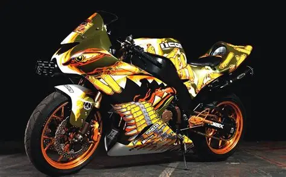
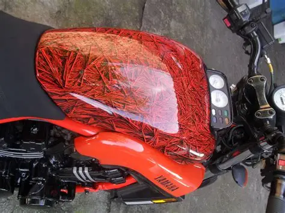
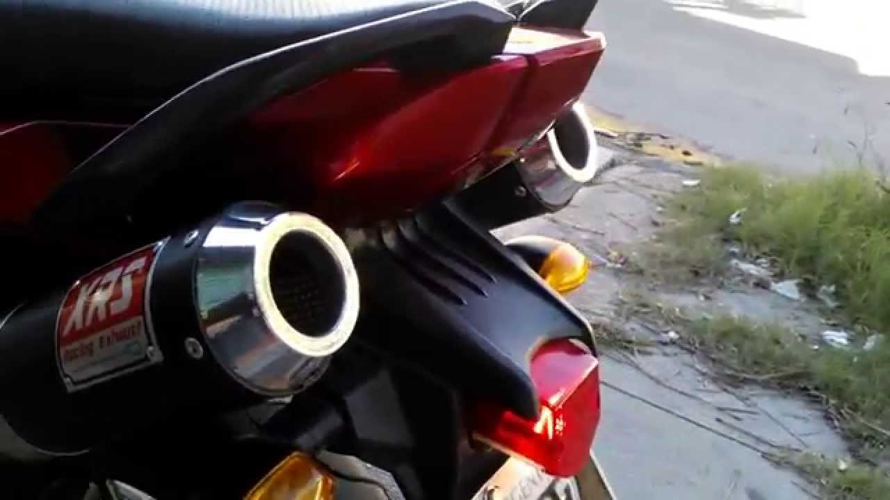
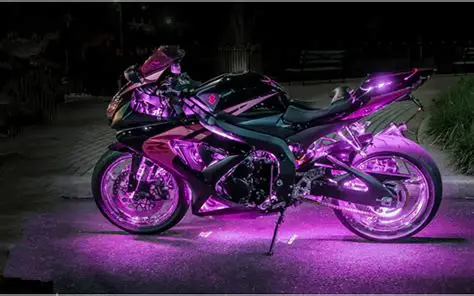
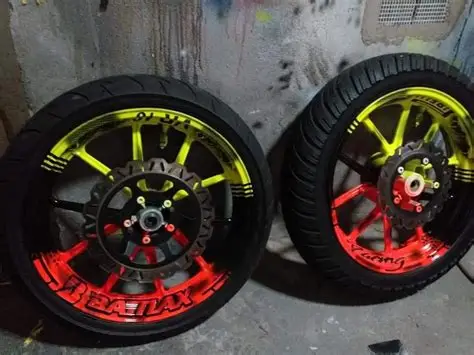
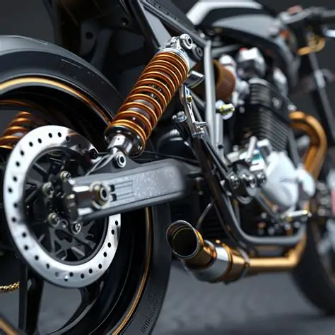
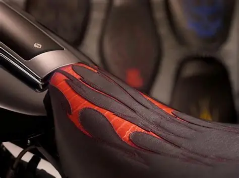

¿Qué es el Tuning?

El tuning es el proceso de modificar una motocicleta para mejorar su aspecto, rendimiento o comodidad. Muchas personas personalizan sus motos para hacerlas más atractivas visualmente o para adaptarlas a sus necesidades específicas.
La personalización puede incluir cambios estéticos, mecánicos y tecnológicos. Actualmente existen miles de accesorios y componentes que permiten crear motocicletas completamente únicas.
Pinturas Personalizadas

Una de las modificaciones más populares es la pintura personalizada. Los propietarios pueden elegir colores exclusivos, diseños deportivos, acabados mate o incluso ilustraciones artísticas.
Tipos de Pintura
- Pintura metálica.
- Pintura mate.
- Pintura perlada.
- Aerografía artística.
- Diseños personalizados.
Ventajas
- Apariencia exclusiva.
- Mayor valor estético.
- Identidad propia.
Escape Deportivo

Los escapes deportivos mejoran el sonido de la motocicleta y en algunos casos también aumentan el rendimiento del motor.
Están fabricados en materiales ligeros como aluminio, titanio o fibra de carbono.
Beneficios
- Sonido más potente.
- Reducción de peso.
- Mejor apariencia.
- Mayor rendimiento.
Iluminación LED

La iluminación LED se ha vuelto muy popular debido a su bajo consumo energético y excelente visibilidad.
Muchos motociclistas utilizan luces LED decorativas para personalizar sus vehículos durante eventos y exhibiciones.
Aplicaciones
- Faros delanteros.
- Luces decorativas.
- Intermitentes LED.
- Luces traseras.
Rines Personalizados

Los rines personalizados permiten mejorar considerablemente el aspecto de una motocicleta. Existen modelos deportivos, clásicos y de competición.
También pueden pintarse para combinar con el diseño general del vehículo.
Suspensión Mejorada

La suspensión influye directamente en la estabilidad y comodidad de la moto. Muchas personas instalan sistemas ajustables para obtener un mejor desempeño.
Beneficios
- Mayor estabilidad.
- Conducción más cómoda.
- Mejor respuesta en curvas.
- Mayor seguridad.
Asientos Personalizados

Los asientos personalizados mejoran significativamente la comodidad, especialmente en viajes largos.
Pueden fabricarse con cuero, espuma especial o materiales resistentes al agua.
Ventajas
- Mayor comodidad.
- Diseño exclusivo.
- Mejor postura.
- Menor cansancio.
Comparación de Modificaciones
| Modificación | Estética | Rendimiento | Comodidad |
|---|---|---|---|
| Pintura | Excelente | Baja | Baja |
| Escape Deportivo | Muy Buena | Excelente | Media |
| LED | Excelente | Baja | Media |
| Suspensión | Buena | Excelente | Excelente |
| Asientos | Buena | Baja | Excelente |
Consejos para Personalizar tu Moto
- Planifica las modificaciones.
- Utiliza componentes de calidad.
- Respeta las normas de tránsito.
- No comprometas la seguridad.
- Realiza mantenimiento periódico.
- Consulta especialistas cuando sea necesario.